Microcontroladores
- Arduino 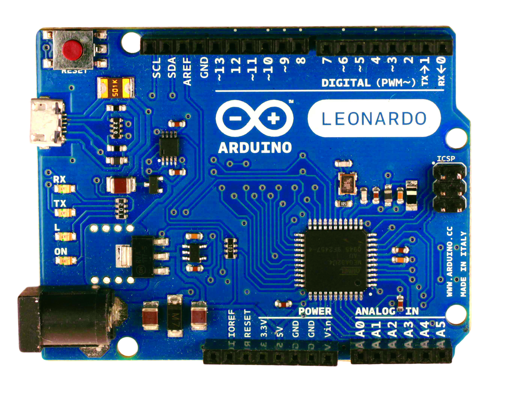
Arduino es una plataforma de hardware y software de código abierto para el diseño y desarrollo de proyectos electrónicos interactivos. El hardware consiste en una tarjeta de circuito impreso con un microcontrolador y una serie de pines de entrada/salida que permiten interactuar con diferentes componentes electrónicos, como sensores, actuadores y dispositivos de comunicación. El software de Arduino consiste en un entorno de desarrollo integrado (IDE) que permite escribir y compilar el código fuente en un lenguaje de programación basado en C/C++. El código se carga en la tarjeta Arduino a través de un cable USB y se ejecuta en el microcontrolador. Arduino es popular entre los aficionados y los profesionales de la electrónica, ya que proporciona una plataforma fácil de usar para desarrollar prototipos y proyectos interactivos de manera rápida y eficiente. Los proyectos pueden variar desde simples experimentos de electrónica hasta robots avanzados, sistemas de control y automatización, y dispositivos conectados a Internet de las cosas (IoT). Además, Arduino tiene una comunidad activa de usuarios y desarrolladores que comparten proyectos, códigos y recursos en línea, lo que hace que sea fácil para los principiantes empezar a aprender y los desarrolladores avanzados crear proyectos más complejos. En resumen, Arduino es una plataforma flexible, accesible y potente para la creación de proyectos electrónicos interactivos.
Raspberry Pi
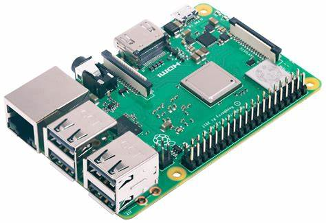Raspberry Pi es una pequeña computadora de placa única (SBC, por sus siglas en inglés) diseñada para ser accesible y económica. Fue desarrollada por la Fundación Raspberry Pi, una organización sin fines de lucro en el Reino Unido, con el objetivo de fomentar el aprendizaje de la programación y la electrónica en las escuelas y en todo el mundo. La Raspberry Pi cuenta con un procesador ARM, memoria RAM, puertos USB, HDMI, Ethernet, Wi-Fi y Bluetooth, así como una tarjeta microSD para almacenamiento de datos y un conector GPIO (entrada/salida de propósito general) para interactuar con sensores, actuadores y otros dispositivos electrónicos. Raspberry Pi funciona con un sistema operativo basado en Linux y es compatible con varios lenguajes de programación, incluyendo Python, C/C++, Java y Scratch, lo que lo hace ideal para proyectos de electrónica y programación, como sistemas de control, robots, cámaras de vigilancia, servidores web, dispositivos de automatización del hogar, entre otros. Además, Raspberry Pi cuenta con una comunidad activa de usuarios y desarrolladores que comparten proyectos, tutoriales, recursos y soporte en línea, lo que facilita el aprendizaje y el desarrollo de proyectos para principiantes y expertos por igual. En resumen, Raspberry Pi es una poderosa herramienta para el aprendizaje y la experimentación en la electrónica y la programación, y una plataforma accesible y económica para proyectos tecnológicos innovadores.
agleBoard
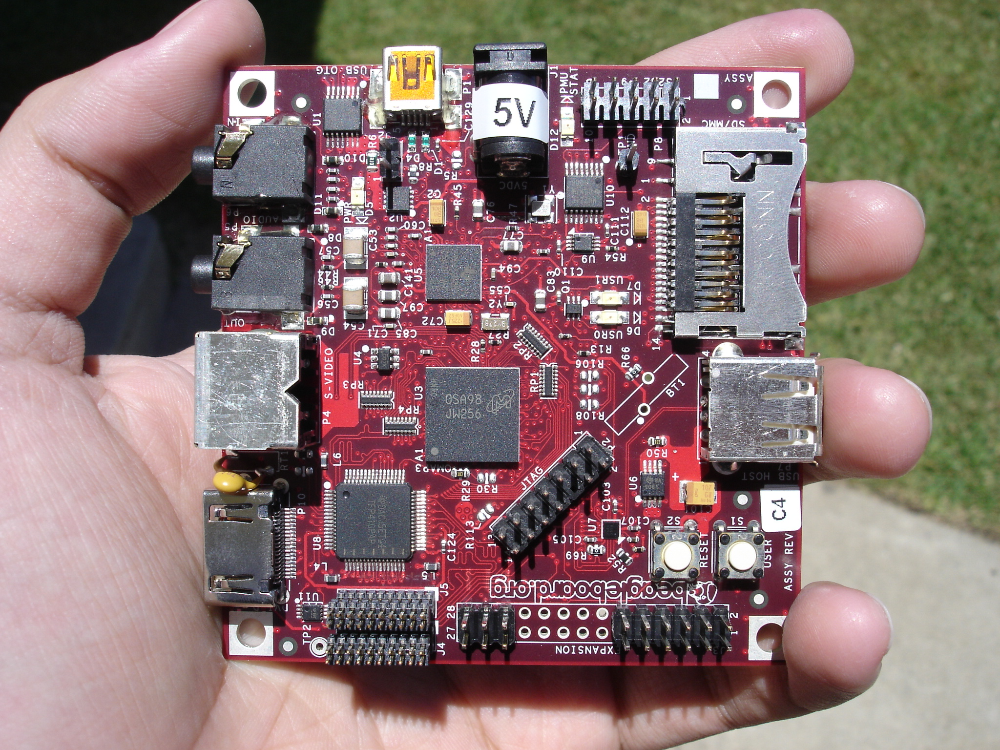BeagleBoard es una plataforma de hardware de código abierto diseñada para el desarrollo de proyectos electrónicos y de sistemas integrados. Fue desarrollada por BeagleBoard.org, una comunidad de desarrolladores sin fines de lucro que se dedica a la promoción del aprendizaje y la innovación en la tecnología. La BeagleBoard cuenta con un procesador ARM, memoria RAM, puertos USB, Ethernet, HDMI, así como otros puertos de entrada/salida para interactuar con sensores, actuadores y otros componentes electrónicos. La plataforma también cuenta con una ranura para tarjeta microSD para almacenamiento de datos y un conector de expansión para agregar módulos y placas adicionales. La BeagleBoard es compatible con una variedad de sistemas operativos, incluyendo Linux, Android, Ubuntu y otros sistemas operativos embebidos, y soporta varios lenguajes de programación, incluyendo C/C++, Python, Java, entre otros. La plataforma es ideal para proyectos de robótica, automatización, sistemas de control, y otros proyectos de electrónica y sistemas integrados. La BeagleBoard cuenta con una comunidad activa de desarrolladores y usuarios que comparten proyectos, tutoriales, recursos y soporte en línea, lo que facilita el aprendizaje y el desarrollo de proyectos para principiantes y expertos por igual. En resumen, BeagleBoard es una plataforma poderosa, flexible y de código abierto para el desarrollo de proyectos electrónicos y de sistemas integrados.
Motores
- Servomotor 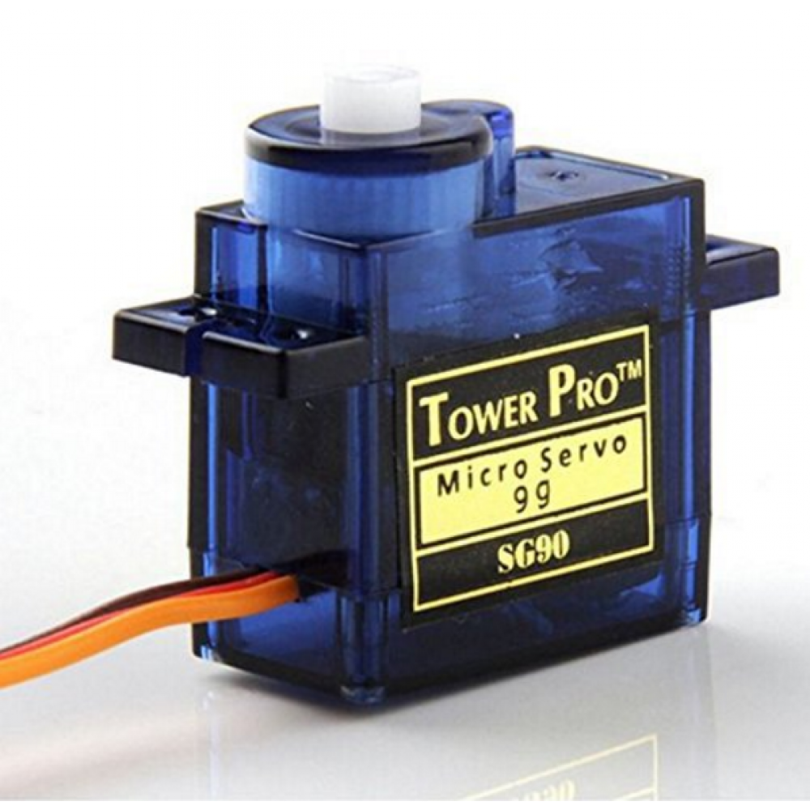
- Motor de corriente continua 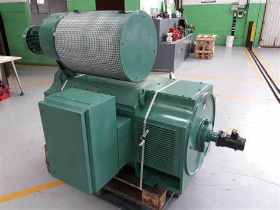
- Motor paso a paso 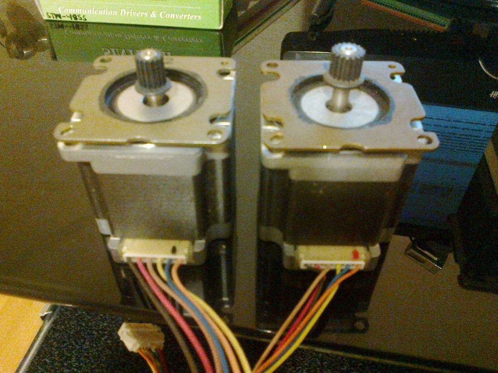
Un servomotor es un tipo de motor eléctrico que se utiliza para controlar la posición angular de un objeto de manera precisa. El servomotor consta de un motor eléctrico, un circuito de control y un mecanismo de retroalimentación que permite al sistema conocer la posición actual del objeto que se está controlando. El motor eléctrico en un servomotor es un motor de corriente continua (DC) que tiene un eje de salida. Este eje está conectado a un engranaje o sistema de poleas que controla el objeto que se desea mover. El circuito de control en el servomotor se utiliza para controlar la velocidad y la dirección del motor eléctrico. El mecanismo de retroalimentación en el servomotor es un potenciómetro o un codificador que mide la posición actual del objeto que se está controlando. La información de posición se envía al circuito de control para ajustar la velocidad y la dirección del motor eléctrico y así lograr la posición deseada. Los servomotores se utilizan comúnmente en aplicaciones que requieren movimiento preciso y controlado, como en robótica, sistemas de control de vuelo en drones y aviones, maquinaria industrial, automatización de procesos, entre otros.
Un motor de corriente continua (DC) es un tipo de motor eléctrico que convierte la energía eléctrica en movimiento mecánico rotativo. El motor consta de una estructura que contiene un rotor y un estator, ambos componentes están compuestos de imanes y bobinas de alambre. El rotor en un motor de corriente continua es el componente giratorio, mientras que el estator es el componente fijo. El rotor tiene imanes permanentes o electroimanes que se alinean con los campos magnéticos del estator para generar un movimiento rotativo. El estator está compuesto de bobinas de alambre que se conectan a una fuente de alimentación eléctrica para crear campos magnéticos alternos que interactúan con los imanes del rotor. El motor de corriente continua se alimenta con una fuente de corriente continua que fluye en la bobina del estator, creando un campo magnético. Cuando la corriente fluye a través de la bobina, el rotor se ve atraído por el campo magnético y comienza a girar. Para que el motor continúe girando, la corriente debe invertirse en la bobina del estator de manera constante para que el campo magnético siga moviéndose y atrayendo el rotor. Los motores de corriente continua se utilizan en una amplia variedad de aplicaciones, desde pequeños motores en dispositivos electrónicos hasta grandes motores en maquinaria pesada. Se utilizan en la industria automotriz, aeronáutica, robótica, automatización, y muchas otras aplicaciones. Además, los motores de corriente continua pueden ser controlados con precisión mediante electrónica, lo que permite ajustar la velocidad y el torque en tiempo real.
Un motor paso a paso es un tipo de motor eléctrico que convierte la energía eléctrica en movimiento mecánico rotativo mediante pasos discretos. El motor consta de un rotor y un estator, ambos componentes tienen dientes o polos que se entrelazan para producir un movimiento. El rotor en un motor paso a paso tiene imanes o dientes que se atraen y repelen con los polos del estator para crear un movimiento rotativo. El estator está compuesto de varias bobinas de alambre dispuestas en un patrón circular. Estas bobinas se energizan secuencialmente para producir un campo magnético que atrae o repele el rotor, provocando que se mueva un paso en la dirección deseada. El motor paso a paso puede ser controlado con precisión para mover el rotor en pasos predefinidos, lo que lo hace ideal para aplicaciones que requieren un posicionamiento preciso, como en la robótica, impresoras 3D, maquinaria CNC, entre otros. Existen diferentes tipos de motores paso a paso, como el motor unipolar y el motor bipolar, cada uno con sus propias características y usos específicos. En general, los motores paso a paso son una buena opción cuando se requiere un posicionamiento preciso y controlado de un objeto en movimiento.
Sensores
- Sensores infrarrojos 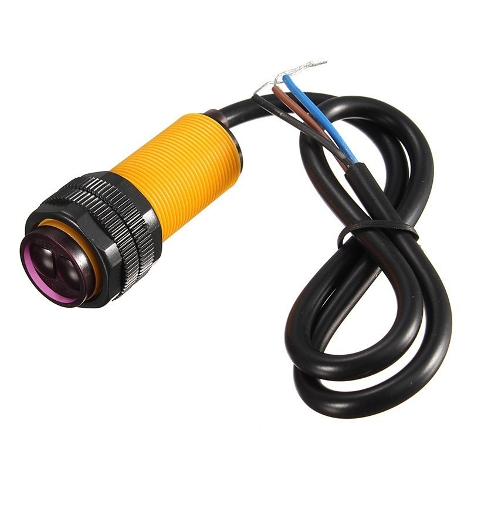
- Sensores ultrasónicos 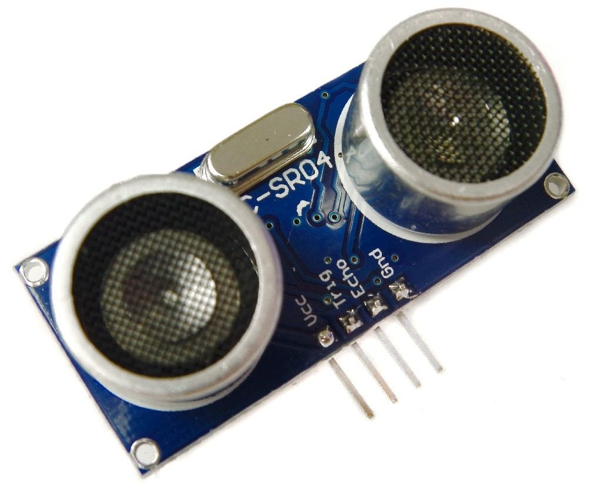
- Sensores de presión 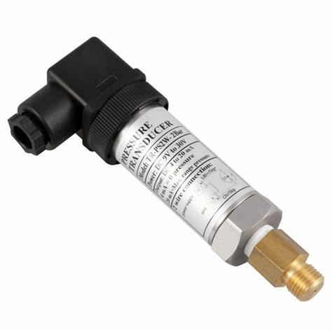
- Sensores de temperatura 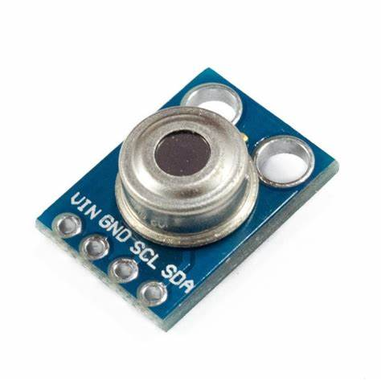
- Sensores de luz 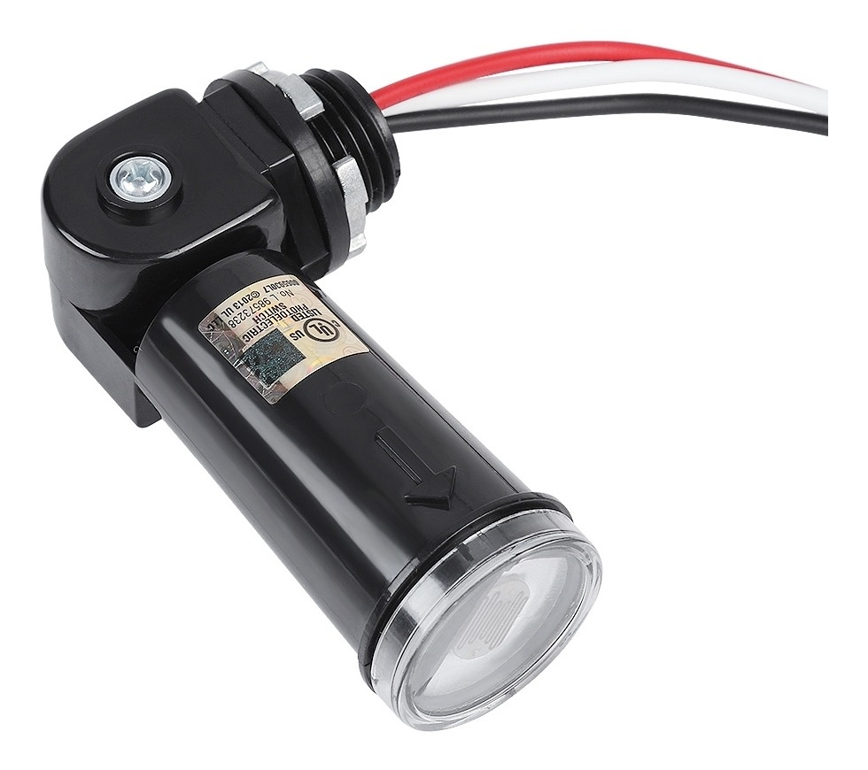 El sensor de luz es un dispositivo que se utiliza para medir la cantidad de luz que está presente en un ambiente. También conocido como fotómetro, estos sensores detectan la intensidad de la luz incidente y la convierten en una señal eléctrica que puede ser procesada por un sistema electrónico. Existen varios tipos de sensores de luz, pero en general, funcionan midiendo alguna propiedad física que varía con la intensidad de la luz, como la resistencia eléctrica, la tensión o la corriente. Los sensores de luz se clasifican en dos categorías principales: sensores de luz analógicos y digitales. Los sensores de luz analógicos miden la intensidad de la luz en términos de una señal analógica, como una tensión o corriente que varía proporcionalmente con la intensidad de la luz. Los sensores de luz digitales miden la intensidad de la luz en términos de una señal digital, que puede ser procesada directamente por un microcontrolador o procesador. Los sensores de luz se utilizan en una amplia variedad de aplicaciones, desde medición de la intensidad de la luz en fotografía y video hasta control de la iluminación en sistemas de automatización del hogar y seguridad. En general, los sensores de luz son una herramienta importante para medir y controlar la intensidad de la luz en diferentes aplicaciones.
Un sensor infrarrojo es un dispositivo electrónico que es capaz de detectar la presencia de objetos que emiten radiación infrarroja en su campo de detección. Este tipo de sensor funciona al medir la cantidad de radiación infrarroja emitida por un objeto y la cantidad de radiación infrarroja que regresa al sensor después de ser reflejada por el objeto. Los sensores infrarrojos se utilizan comúnmente en aplicaciones de automatización y control, como sistemas de seguridad, sistemas de iluminación, sistemas de calefacción y aire acondicionado, sistemas de control de procesos industriales, entre otros. Hay diferentes tipos de sensores infrarrojos, como los sensores de barrera, que funcionan como un interruptor de luz que se activa cuando algo bloquea su haz de luz; los sensores de proximidad, que pueden detectar la presencia de objetos a una corta distancia; y los sensores de temperatura, que miden la radiación infrarroja emitida por los objetos para determinar su temperatura. Los sensores infrarrojos son una herramienta muy útil en el campo de la automatización y control debido a su capacidad para detectar objetos a distancia y con precisión.
Los sensores ultrasónicos son dispositivos electrónicos que utilizan ondas sonoras de alta frecuencia para medir la distancia a un objeto. Estos sensores envían una señal de sonido de alta frecuencia que rebota en un objeto y regresa al sensor, lo que permite medir la distancia entre el sensor y el objeto. El sensor ultrasónico consta de un transmisor que emite ondas sonoras de alta frecuencia y un receptor que recibe las ondas sonoras que regresan después de rebotar en un objeto. La distancia se calcula midiendo el tiempo que tarda la señal en ir y volver al sensor. Estos sensores pueden medir distancias de unos pocos centímetros hasta varios metros, dependiendo de la frecuencia y la potencia de la señal. Los sensores ultrasónicos se utilizan en una variedad de aplicaciones, como sensores de proximidad en automóviles y robots, medición de nivel de líquidos en tanques, detección de objetos en líneas de producción, entre otros. Una de las ventajas de los sensores ultrasónicos es que no dependen de la luz y, por lo tanto, pueden detectar objetos en condiciones de poca luz o en la oscuridad total. Además, son relativamente económicos y fáciles de implementar en una variedad de aplicaciones.
Un sensor de presión es un dispositivo que mide la presión de un fluido o gas y lo convierte en una señal eléctrica que puede ser procesada por un sistema electrónico. Estos sensores se utilizan en una amplia variedad de aplicaciones, desde monitoreo de presión de neumáticos en vehículos hasta monitoreo de la presión arterial en seres humanos. Hay varios tipos de sensores de presión, pero en general, funcionan midiendo la deformación o la variación en el flujo de un material sensible a la presión. Esta deformación o variación se convierte en una señal eléctrica que se puede medir y procesar. Los sensores de presión se pueden clasificar en dos categorías principales: sensores de presión absoluta y sensores de presión diferencial. Los sensores de presión absoluta miden la presión relativa a un vacío absoluto, mientras que los sensores de presión diferencial miden la diferencia de presión entre dos puntos. Los sensores de presión se utilizan en una amplia variedad de aplicaciones, desde monitoreo de la presión de neumáticos en vehículos hasta monitoreo de la presión arterial en seres humanos. Algunos de los tipos de sensores de presión comunes incluyen los sensores de presión capacitivos, los sensores de presión piezoeléctricos y los sensores de presión de silicio. Cada tipo de sensor tiene sus propias ventajas y desventajas, dependiendo de la aplicación específica.
Un sensor de temperatura es un dispositivo que mide la temperatura de un objeto o ambiente y la convierte en una señal eléctrica que puede ser procesada por un sistema electrónico. Estos sensores se utilizan en una amplia variedad de aplicaciones, desde monitoreo de la temperatura en alimentos y bebidas hasta control de la temperatura en sistemas de refrigeración y climatización. Hay varios tipos de sensores de temperatura, pero en general, funcionan midiendo alguna propiedad física que varía con la temperatura, como la resistencia eléctrica, la tensión, la corriente o la frecuencia de resonancia. Estos sensores se clasifican en dos categorías principales: sensores de temperatura contactos y sin contacto. Los sensores de temperatura contactos, como los termistores y las termocuplas, miden la temperatura en un punto específico en el objeto o ambiente. Los sensores de temperatura sin contacto, como los termómetros infrarrojos, miden la temperatura de un objeto o ambiente sin necesidad de entrar en contacto físico con él. Cada tipo de sensor de temperatura tiene sus propias ventajas y desventajas, dependiendo de la aplicación específica. En general, los sensores de temperatura son una herramienta importante para medir y controlar la temperatura en una amplia variedad de procesos industriales y de consumo.
Actuadores
- Válvulas 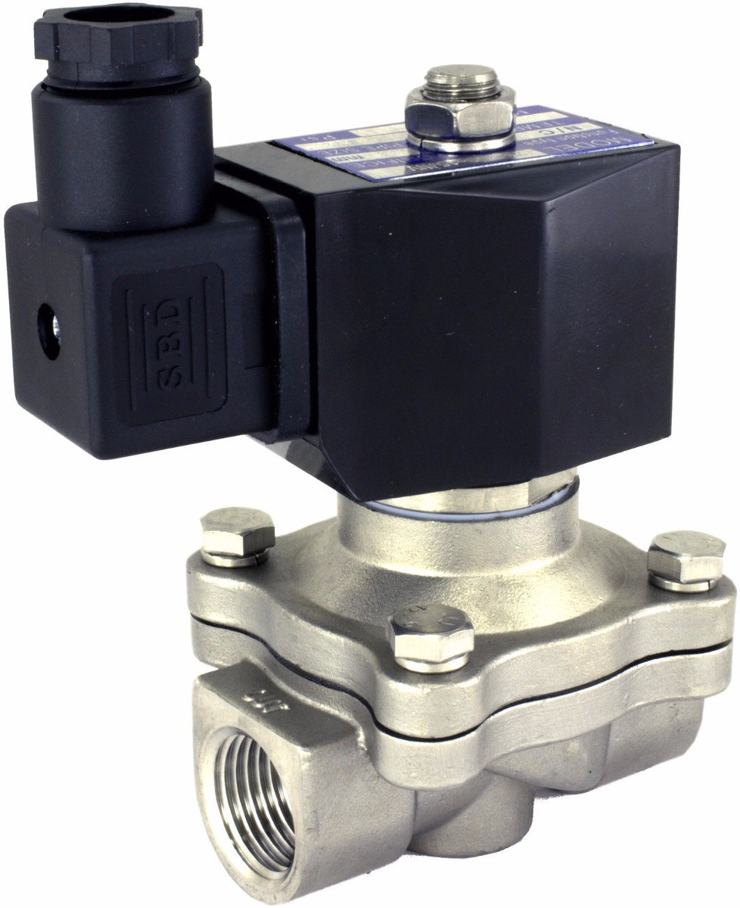
- Válvulas de compuerta: se utilizan para cortar el flujo del fluido y suelen ser de tamaño grande.
- Válvulas de bola: tienen una esfera que se mueve para permitir o cortar el flujo.
- Válvulas de diafragma: tienen un diafragma que se mueve para permitir o cortar el flujo.
- Válvulas de mariposa: tienen un disco que se mueve para permitir o cortar el flujo.
- Válvulas de aguja: se utilizan para controlar el flujo en sistemas de baja presión.
- Cilindros hidráulicos 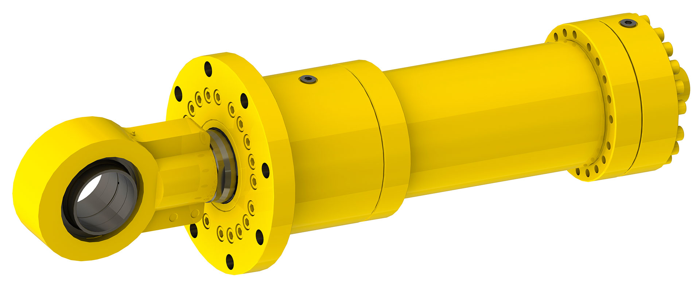
- Cilindros neumáticos 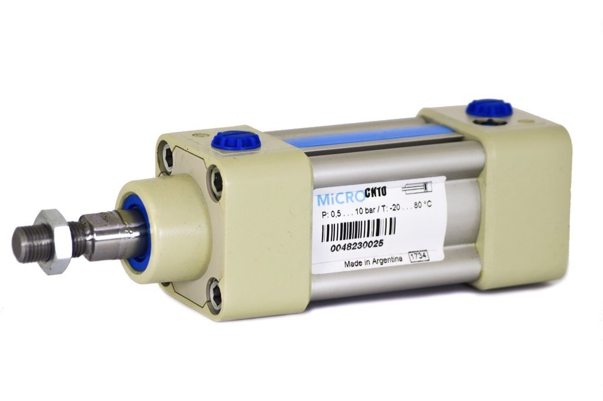
- Solenoide 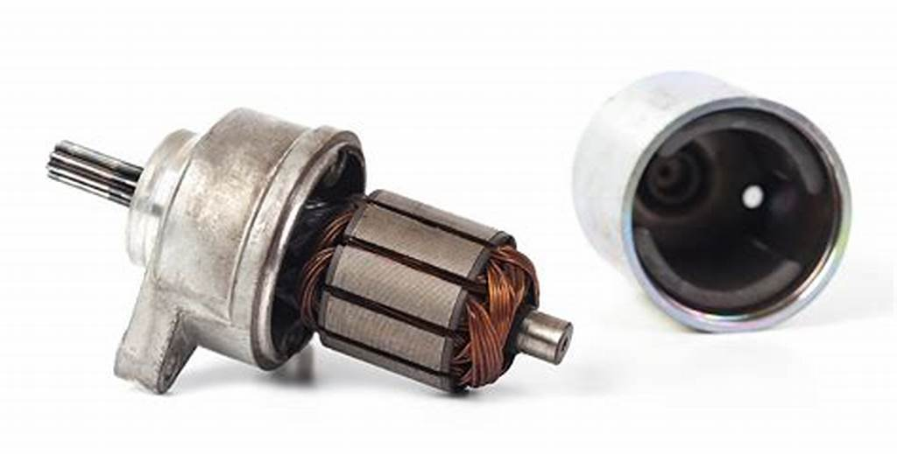 El solenoide es un dispositivo electromecánico que convierte la energía eléctrica en energía mecánica. Consiste en una bobina de alambre que rodea un núcleo de metal ferromagnético, con un émbolo o pistón móvil en su interior. Cuando se aplica una corriente eléctrica a la bobina, se genera un campo magnético que atrae el núcleo de metal hacia la bobina, moviendo el émbolo o pistón. Cuando la corriente eléctrica se interrumpe, el campo magnético desaparece y el émbolo o pistón vuelve a su posición original. Los solenoides se utilizan en una amplia variedad de aplicaciones, como en electroválvulas, cerraduras eléctricas, motores de arranque de automóviles, sistemas de control de acceso, entre otros. También pueden ser controlados por medio de circuitos electrónicos y sensores, lo que les permite ser activados y desactivados automáticamente según las necesidades de la aplicación. Los solenoides vienen en diferentes tamaños y configuraciones, y se pueden fabricar con diferentes materiales y acabados para adaptarse a diferentes entornos de trabajo. Además, existen solenoides de acción directa, que no requieren de una fuente de presión externa para operar, y solenoides pilotados, que utilizan una fuente de presión externa para amplificar su fuerza y capacidad de trabajo.
Las válvulas en la industria
Las válvulas son dispositivos mecánicos que se utilizan para controlar el flujo de fluidos, gases o líquidos, en tuberías, tanques y otros sistemas de transporte. Básicamente, una válvula está compuesta por un cuerpo, un actuador y un mecanismo de cierre.
El cuerpo de la válvula es la parte principal, que se encarga de contener el fluido y permitir que fluya a través de ella. El actuador es el componente que controla la apertura y cierre de la válvula, y puede ser accionado por medio de una palanca, un motor eléctrico, un solenoide o cualquier otro mecanismo que se adapte a las necesidades del sistema.
Existen varios tipos de válvulas, entre ellas:
Las válvulas son esenciales en muchos procesos industriales, desde sistemas de agua y gas hasta petroquímicos y farmacéuticos. También se utilizan en la industria alimentaria, médica y de procesamiento de minerales. Las válvulas pueden ser muy simples o muy complejas, y se diseñan para cumplir con requisitos específicos de cada aplicación.
Los cilindros hidráulicos son componentes mecánicos que se utilizan en sistemas hidráulicos para convertir la energía hidráulica en energía mecánica. Básicamente, un cilindro hidráulico está compuesto por un tubo o carcasa cilíndrica, un pistón móvil en su interior, y dos extremos, uno fijo y otro móvil. El fluido hidráulico se aplica a presión en el extremo móvil del cilindro, lo que empuja al pistón y produce una fuerza lineal en el extremo fijo. La fuerza que un cilindro hidráulico puede generar depende de varios factores, como el tamaño del cilindro, la presión del fluido hidráulico y la distancia recorrida por el pistón. Los cilindros hidráulicos pueden tener diferentes diámetros, longitudes y capacidades de carga para adaptarse a diferentes aplicaciones. Los cilindros hidráulicos se utilizan en una amplia variedad de aplicaciones, como maquinaria pesada, construcción, minería, sistemas de elevación y transporte, y sistemas de automatización industrial. Algunos ejemplos de su uso incluyen grúas, retroexcavadoras, prensas hidráulicas, sistemas de frenado hidráulico y sistemas de dirección asistida. Los cilindros hidráulicos pueden ser accionados de manera manual o automática, y pueden ser controlados por medio de válvulas, sensores y otros componentes hidráulicos. También pueden estar diseñados para ser resistentes a la corrosión y altas temperaturas, y se pueden fabricar con diferentes materiales y acabados para adaptarse a diferentes entornos de trabajo.
Los cilindros neumáticos son dispositivos mecánicos que se utilizan en sistemas neumáticos para convertir la energía del aire comprimido en energía mecánica lineal. Al igual que los cilindros hidráulicos, los cilindros neumáticos constan de un tubo cilíndrico y un pistón móvil en su interior, pero en lugar de fluido hidráulico, se utiliza aire comprimido para generar la fuerza necesaria para mover el pistón. Los cilindros neumáticos tienen una amplia variedad de aplicaciones, como en sistemas de automatización industrial, maquinaria, sistemas de transporte y elevación, y en sistemas de frenado. Son utilizados en aplicaciones donde se requiere una fuerza relativamente baja y una velocidad de movimiento rápida. Los cilindros neumáticos vienen en diferentes tamaños, diámetros y longitudes para adaptarse a diferentes aplicaciones. La fuerza que puede generar un cilindro neumático depende de la presión del aire comprimido y del tamaño del cilindro. Al igual que con los cilindros hidráulicos, los cilindros neumáticos pueden ser accionados manualmente o automáticamente, y pueden ser controlados por medio de válvulas, sensores y otros componentes neumáticos. También pueden estar diseñados para ser resistentes a la corrosión y altas temperaturas, y se pueden fabricar con diferentes materiales y acabados para adaptarse a diferentes entornos de trabajo.
Controladores de movimiento
- Controlador de movimiento basado en PC 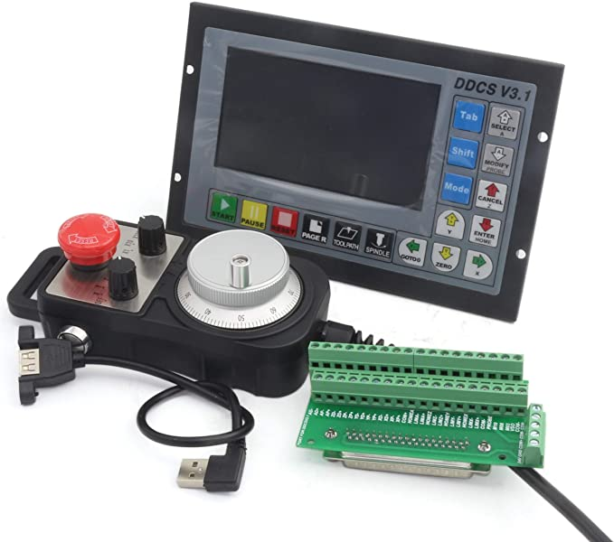
- Controlador de movimiento integrado 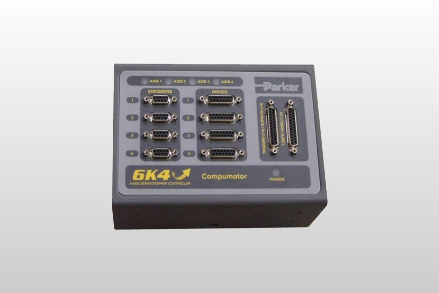
- Controlador de movimiento programable 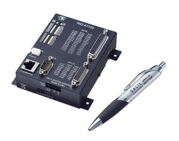
Un controlador de movimiento basado en PC es un dispositivo que se utiliza para controlar y supervisar la posición, velocidad, aceleración y otros parámetros de movimiento de un sistema mecánico o electromecánico, como un robot, una máquina herramienta, una plataforma de prueba, entre otros. Este tipo de controlador se conecta a una computadora a través de un puerto USB, Ethernet o serie, y utiliza un software especializado para configurar y controlar las funciones de movimiento del sistema. El software se ejecuta en la computadora y permite al usuario crear programas de movimiento personalizados, ajustar los parámetros de control, monitorear el rendimiento del sistema en tiempo real y realizar diagnósticos y mantenimiento preventivo. El controlador de movimiento basado en PC puede utilizar diferentes tipos de señales de entrada y salida para interactuar con el sistema, como señales analógicas, digitales, pulsos de encoder, señales de límite, entre otros. También puede utilizar diferentes algoritmos de control de movimiento, como PID, de punto a punto, de seguimiento de trayectoria, entre otros. Este tipo de controlador se utiliza en una amplia variedad de aplicaciones, como en la automatización de procesos industriales, la investigación en robótica y control de movimiento, la simulación de movimiento en videojuegos y películas, entre otros.
Un controlador de movimiento integrado es un dispositivo que se utiliza para controlar y supervisar la posición, velocidad, aceleración y otros parámetros de movimiento de un sistema mecánico o electromecánico, como un robot, una máquina herramienta, una plataforma de prueba, entre otros. A diferencia del controlador de movimiento basado en PC, el controlador de movimiento integrado es un dispositivo autónomo que no requiere una conexión a una computadora externa para funcionar. Este tipo de controlador de movimiento utiliza un microprocesador integrado para controlar las funciones de movimiento del sistema. Por lo general, tiene entradas y salidas de hardware que se utilizan para interactuar con el sistema, como entradas de encoder, entradas de sensor de límite, entradas de sensor de fuerza, salidas de control de motor, entre otras. El controlador de movimiento integrado utiliza un firmware especializado que se ejecuta en el microprocesador para configurar y controlar las funciones de movimiento del sistema. El firmware se puede programar para crear programas de movimiento personalizados, ajustar los parámetros de control, monitorear el rendimiento del sistema en tiempo real y realizar diagnósticos y mantenimiento preventivo. El controlador de movimiento integrado es adecuado para aplicaciones que requieren un control de movimiento en tiempo real y que no necesitan una conexión a una computadora externa. Se utiliza en una amplia variedad de aplicaciones, como en la automatización de procesos industriales, la robótica, la impresión 3D, la fabricación de semiconductores, entre otros.
Un controlador de movimiento programable es un dispositivo electrónico que se utiliza para controlar el movimiento de un sistema mecánico, como un robot o una máquina CNC (Control Numérico por Computadora). Este controlador utiliza un microprocesador programable para controlar los movimientos del sistema mecánico en función de las señales de entrada que recibe. El controlador de movimiento programable también puede contar con entradas y salidas digitales y analógicas, lo que permite una mayor integración con otros dispositivos electrónicos. Los programas de control se escriben en un lenguaje de programación específico para el controlador, y se descargan en la memoria del controlador para su ejecución. Algunas de las ventajas de utilizar un controlador de movimiento programable incluyen una mayor precisión en los movimientos del sistema mecánico, la capacidad de cambiar rápidamente los patrones de movimiento para diferentes tareas, y una mayor flexibilidad en la integración con otros dispositivos electrónicos. Además, al utilizar un controlador de movimiento programable se pueden realizar cambios en el comportamiento del sistema mecánico sin la necesidad de realizar cambios físicos en el sistema.